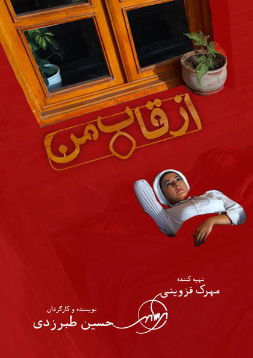
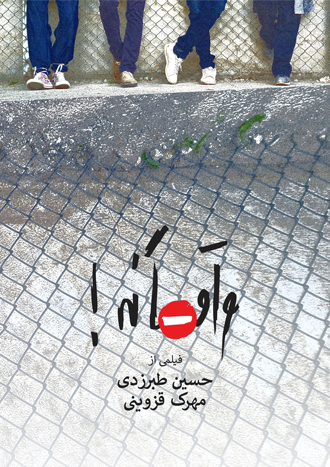
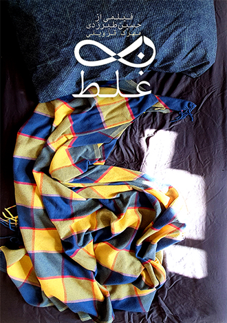

فیلم کوتاه از قاب من
محصول ۱۴۰۲

فیلم کوتاه واقعا نه
محصول 1400

فیلم کوتاه بیغلط
محصول 1398
من (حسین طبرزدی) و مهرک قزوینی، اون ایده ای که از بین دفتر ایده ها، رهامون نمی کنه و مدام آواز “منو بساز” می خونه رو می داریم رو میز و تو برسام مهر فیلم، می سازیمش… سخت یا آسون، کل مسیرش رو با لذت طی می کنیم… قصه ساخته شدن فیلم هامون رو با کلی عکس و فیلم از پشت صحنه و داستان فیلم و استوری بورد و فلورپلن هامون، اینجا ببینید…